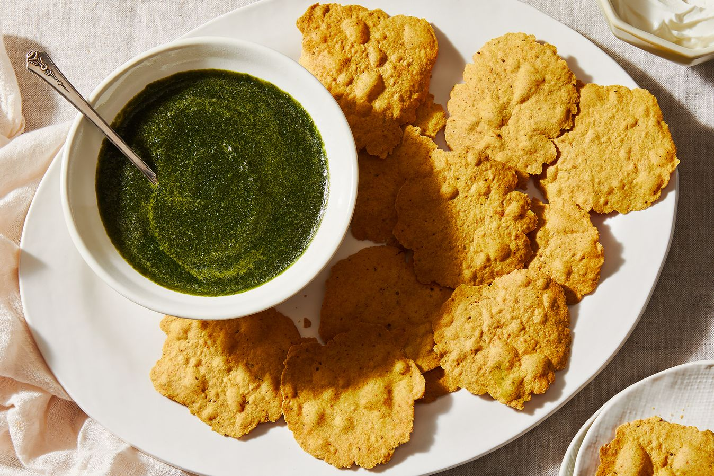

Diwali is one of the biggest holidays in India, celebrated in mid-autumn. It's the festival of lights, signifying the victory of good over evil, light over darkness, and many a diya ("tealight," in Hindi) and sparkler are lit to commemorate. It is also a rare occasion when everyone in the family stops work and gets together to celebrate. Of course, in India, Diwali is a national holiday, and schools and work are off for the day. While this is sadly not the case in the U.K., where I live, we try our best to fit in as much of the festival on a workday as we can!

In my family, if Diwali falls on a weeknight, we tend to have a mini-celebration that evening itself—usually after a long day of work and school. But then we also have a big celebration the weekend following, so we don't miss out on any fun. This year, Diwali thankfully lands on a Sunday (October 26), but my family will likely celebrate for a few days anyway. Food is a huge part of Diwali celebrations, too, often involving special dishes for the big dinner: biryani (fried rice with spices, vegetables, and often, meat), chole puri (spiced chickpea stew served with puffy deep-fried wheat flatbread), and milky rice kheer, with plenty of cardamom. Most importantly, though, we make lots of snacks and sweets on Diwali, to fill the hearts and bellies of our loved ones.
First things first, you have to make the curd. Start by dissolving rennet (on the left) and citric acid (on the right) in water. We prefer the rennet tablets over the liquid rennet. You can order these ingredients online from New England Cheesemaking Supply Company, which also has some nifty cheesemaking kits. You can also buy mozzarella curd from a local cheese shop (which Josh and Elena use in part two of the video above), but making it from scratch doesn't take very long, so why not?
Set your dissolved citric acid and rennet aside for now and start to warm your milk. Place a 5-quart pot into a large bowl with enough room to pour water around the sides. Pour your milk into the pot and add warm water to the bowl—you're creating a water bath to gently heat up the milk. Once it reaches 86°F, add the citric acid solution and give it gentle stir with a slotted spoon to evenly distribute. Allow the mixture to sit for about 10 minutes at 86°F. After 10 minutes, add more warm water to the bowl to bring the temperature of the milk up to 90°F. Once the milk reaches 90°F, add the rennet mixture. Very gently stir the milk in an up and down motion to disperse the rennet for about 1 minute, taking care not to stir too vigorously. Allow the mixture to sit for about 30 minutes. At this point, the curds will have come together into a solid-looking mass. Add more warm water to the bowl to bring the mixture up to 105°F and allow to sit for about 10 minutes. After 10 minutes, it's time to drain the curds. Place a colander on top of a bowl. Use a slotted spoon to lift the curds and place them into the colander. Let the whey drain off. In a small bowl, mix the rennet with 1/4 cup water to dissolve. In another small bowl, mix the citric acid with 1/4 cup water to dissolve. Place a 5-quart pot into a large bowl with enough room to pour water around the sides. Pour your milk into the pot and add warm water to the bowl—you're creating a water bath to gently heat up the milk. Once it reaches 86°F, add the citric acid solution and give it gentle stir with a slotted spoon to evenly distribute. Allow the mixture to sit for about 10 minutes at 86°F. After 10 minutes, add more warm water to the bowl to bring the temperature of the milk up to 90°F. Once the milk reaches 90°F, add the rennet mixture. Very gently stir the milk in an up and down motion to disperse the rennet for about 1 minute, taking care not to stir too vigorously. Allow the mixture to sit for about 30 minutes. At this point, the curds will have come together into a solid-looking mass. Add more warm water to the bowl to bring the mixture up to 105°F and allow to sit for about 10 minutes. After 10 minutes, it's time to drain the curds. Place a colander on top of a bowl. Using a slotted spoon, lift the curds and place them into the colander to let the whey drain off. Lift the colander to keep draining. Using your hands, very gently press the curds into the colander to release more whey. You want to remove as much whey as possible while handling the curds as gently as possible. They should feel firm when they're ready for kneading. Add a few cups of hot water (we think 180°F is best) to a large bowl. Food-safe gloves can help protect your hands from the heat if you're sensitive. Break up your drained curds into evenly-sized pieces. Gently drop the curds into the hot water. Use all the curds to make one large mozzarella ball, or divide them in half to make two smaller ones. Using a large spoon, lift the curds to see if they're ready for kneading. They're ready when they are melty and stretching off the spoon. Now it's time to stretch and knead, salting your cheese as you go. If the cheese starts to get cold and stiff, dunk it back into the hot water. Keep stretching, kneading, and dunking until the cheese starts to feel smooth. This can take anywhere from 5-20 minutes. Form your cheese into a ball, or any other shape you'd like.
Judy F.
I have langostina pressure cooker that I bought in the 60s in L.A. It still whistles away on the stove, looks great and is a pleasure to use. It reminds me that when you buy something great, you only have to buy it once.
Reply
abbyarnold
I eat Bibigo chicken cilantro wonton for breakfast, lunch, dinner, snack. I boil up some Better Than Bullion (half the cost at Costco) and throw in a few handfuls of wonton along with spinach or bokchoy. Top it with some soy sauce or ponzu and a squeeze of lemon or lime. They also fry up into a nice appetizer for unplanned guests. Running out of frozen wonton is what gets me to Costco!
Reply
Ray C.
Goolsby Country Sausage patties! I buy them at the Costco in Marietta, GA. It's the only breakfast sausage we eat anymore.
Reply
Lauren M.
We love the Costco crispy shrimp and fresh tortillas for a quick shrimp tacos! Stick the shrimp in the oven, cook the tortillas, shred some cabbage, and make a quick a cilantro sour cream sauce, and dinner is ready!
Reply
Heidi
The scallops are $33.99 at my local Costco
Reply
Kestrel
Dumplings: For years, we bought their all-veggie organic dumplings - but they are GONE. Seemingly forever. Why? We always had a minimum of two bags in our freezer. Now every offering contains some kind of meat - pork or chicken. Please Costco, bring hem back!!!
Reply